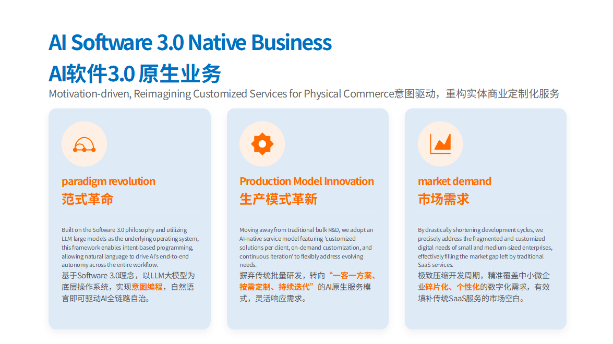

意图编程
客户只需描述业务目标，AI 自动补全逻辑代码，1-3 天生成可落地 Demo。
提交需求SOFTWARE 3.0 · INTENT-DRIVEN
基于 LLM 大模型作为底层“操作系统”，通过自然语言驱动 AI 全链路自治，从需求分析、Demo 生成到交付迭代，帮助企业低成本拥有专属软件。
WHY SOFTWARE 3.0
针对中小企业个性化、碎片化需求，不再用通用系统硬套业务。
先把核心流程和数据结构做成可演示原型，再进入迭代交付。
承接 AI 顾问输出的精益流程与管理标准，把软性逻辑固化为软件功能。
用自然语言描述目标、规则和边界，让业务团队参与软件定义。
软件不再一次性交付后停滞，而是随经营数据和流程复盘持续更新。
把知识库、规则、系统接口和自动执行节点连成完整工作流。